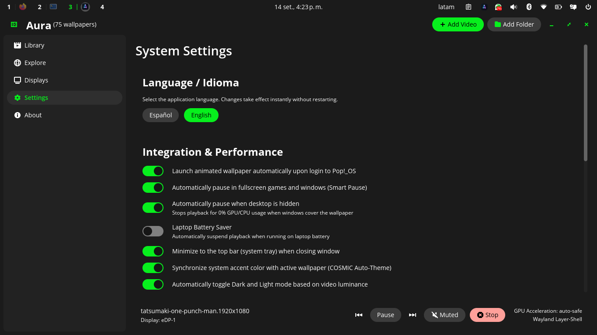
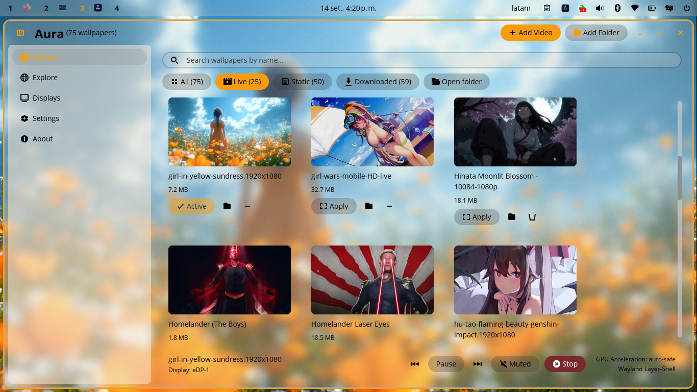
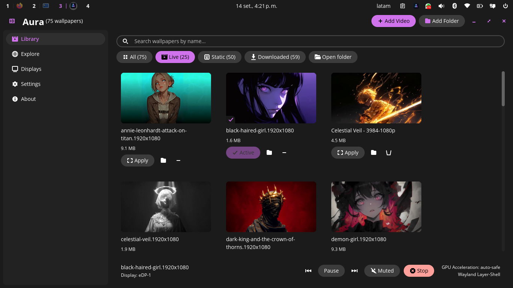
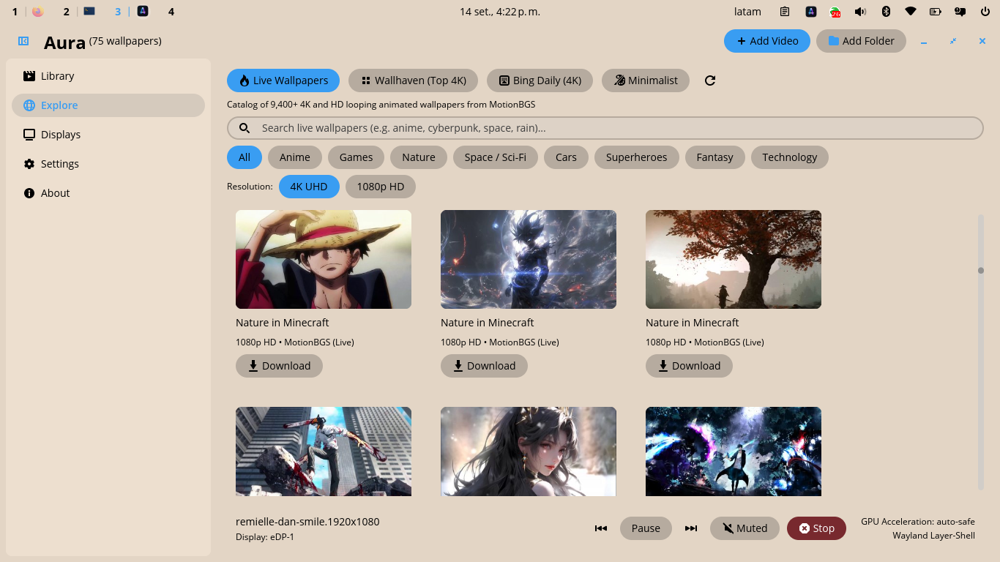
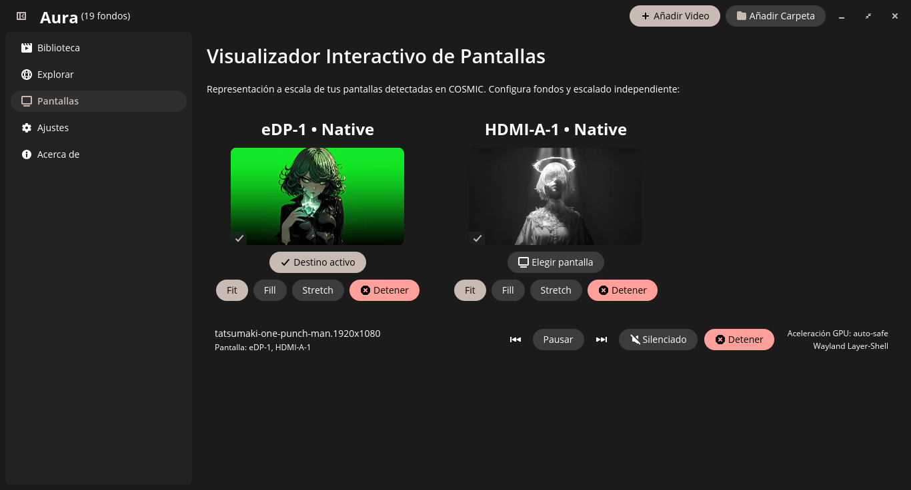

AURA
Alive wallpapers for Linux. Built for the modern desktop.
Transform your workspace with fluid animated backgrounds and dynamic theme colors. Automatically pauses when gaming to keep 100% of your performance.
curl -fsSL https://raw.githubusercontent.com/antwny/aura/main/install.sh | bash
Live wallpapers without the lag or battery drain.
In the past, running animated wallpapers on Linux meant dealing with heavy background scripts that heated up your laptop, drained battery in an hour, and dropped framerates the moment you started a game.
Aura is engineered from scratch in pure compiled Rust. It communicates natively with Wayland's layer-shell, launches in under 20 milliseconds, and automatically halts video rendering the exact millisecond you play a game or unplug your laptop.

Instant Game Freeze
Aura detects fullscreen games and windows instantly, halting playback to return 100% of your GPU and CPU to your games.
Smart Battery Saver
Automatically suspends playback when your laptop is on battery power so you can enjoy full battery life away from your desk.
Native Rust Engine
Direct Wayland layer-shell protocol with zero Electron, WebKit, or Python wrappers. Minimal footprint and zero idle wakeups.
Your desktop changes color with your wallpaper.
Aura analyzes your active animated wallpaper in real time. When the scene shifts from warm sunlight to deep night, your desktop theme and accent colors adapt along with it — tinting your dock, active window highlights, and buttons automatically.


Real-Time Color Match
Extracts dominant tones from the video as it plays, without causing lag or dropping frames.
Always Easy to Read
Intelligent contrast protection ensures your text, button labels, and system icons stay sharp and legible.
System-Wide Sync
Integrates directly with COSMIC Desktop themes. Color shifts apply instantly across all open apps.
Switch wallpapers without leaving your workflow.
Summon an ultra-responsive, floating heads-up display anywhere on your desktop with a single global shortcut. Preview your collection with real-time accent highlights, navigate with arrow keys or mouse wheel, and apply live backgrounds instantly with a single click — all without interrupting your open apps.
Global Shortcut Summon
Bind aura switcher in COSMIC Settings to Super+Alt+W to reveal the floating switcher overlay on any active workspace instantly.
4 Screen Positions
Position the HUD naturally at the Top, Bottom, or as sleek vertical sidebars on the Left or Right screen edges.
Fluid Navigation & 1-Click Apply
Cycle smoothly with arrow keys, WASD, or your mouse scroll wheel. Click any preview card to apply it immediately and auto-dismiss.
Zero-Flicker Native Compositing
Engineered using the Wayland Layer-Shell protocol with exclusive keyboard focus and instant outside-click dismissal with zero desktop latency.
Over 9,400 wallpapers. Zero file hunting.
Discover, preview, and apply gorgeous animated loops directly inside Aura. No browser searching, no downloading from sketchy websites, and no manual video conversion.

MotionBGS Library
Thousands of handpicked anime, cyberpunk, nature, and ambient looping wallpapers in 4K and 1080p ready with one click.
Wallhaven & Bing Daily
Direct access to Wallhaven's top-rated 4K community gallery and daily Bing UHD landscape photography.
One-Click Instant Apply
Preview in high resolution and set any background immediately with fast background async downloads.
Different wallpapers for each monitor.
An intuitive screen manager renders your connected displays to scale, letting you customize each monitor in seconds with independent video loops and aspect controls.

Per-Monitor Assignment
Run distinct animated video loops on your laptop display and external monitors without conflict.
Fit, Fill & Stretch
Maintain exact aspect ratios with pure black ultrawide letterboxing or fill the screen canvas.
Seamless Hotplugging
Plug in or unplug external monitors anytime — Aura detects changes without restarting.
Real speed. Zero idle wakeups.
Tested and verified on Linux. Real numbers, no inflated claims. (Measured on COSMIC Desktop Wayland Layer-Shell across CachyOS and Pop!_OS).
| METRIC | AURA (NATIVE RUST) | LEGACY LINUX SCRIPTS (PYTHON / GTK) | ADVANTAGE |
|---|---|---|---|
| Startup Speed | < 20 ms | ~1,120 ms | 56x faster |
| Memory Footprint | Minimal native footprint | ~180 MB – 240 MB | No WebKit / Electron bloat |
| Background CPU Usage | 0.00% | 3.5% – 8.0% | Zero wakeups |
| GPU Load in Fullscreen Games | 0.4% (Auto-Paused) | 3.0% – 8.0% continuous draw | 100% GPU freed for games |
| Wayland Protocol Architecture | Native layer-shell (bottom) | X11 hacks / root window tricks | Native Wayland |
Get Aura for your desktop.
Install or update with a single terminal command, test the portable standalone package, or compile from source.
Install or Update in 10 Seconds
Run the official installer directly in your terminal. Automatically validates Linux x86_64, verifies SHA-256 release checksums, installs both Aura and its bundled mpvpaper video engine, and configures the COSMIC app launcher.
curl -fsSL https://raw.githubusercontent.com/antwny/aura/main/install.sh | bash
mpvpaper together
Video Runtime Libraries
Required for Wayland video playback and live video previews. The installer verifies these, or you can install them beforehand:
sudo pacman -S --needed mpv ffmpeg
Pre-Compiled Tarball
Prefer manual control? Download the standalone .tar.gz archive from GitHub Releases and run the local script:
tar -xzf aura-*.tar.gz && cd aura-* && ./install.sh
./aura directly from the folder. Zero system modifications.
Compile with Cargo
For developers and Rust enthusiasts who prefer building directly from the repository:
cargo install --git https://github.com/antwny/aura
Free and open-source forever.
Aura is licensed under the GNU General Public License v3.0. Zero telemetry. Zero metrics tracking. Zero ads or account requirements.
GitHub Repository
Star the project, inspect the Rust source code, report issues, and follow releases.
github.com/antwny/aura ↗COSMIC Desktop Ecosystem
Built alongside System76's modern desktop environment written in Rust.
github.com/pop-os/libcosmic ↗Support Development
Aura is built with care for the Linux desktop community. Support ongoing maintenance.
Donate via PayPal ↗